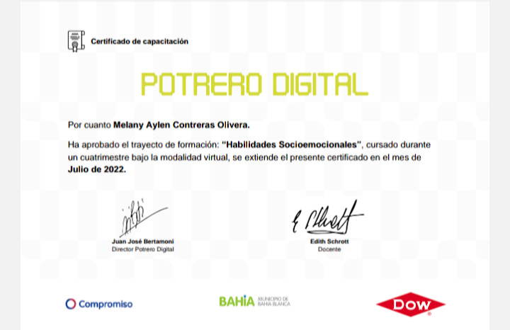

Contreras Olivera Melany Aylen
Programadora web full stack
Datos personales
- Fecha de nacimiento: 21/05/1996 (26 años)
- Nacionalidad: Argentina
- Lugar de recidencia: Bahia Blanca
- E-mail: Melanyaylen60@gmail.com
- Contacto: 2914230420
Estudios
- Educaciòn primaria y secundaria completos bachiller en humanidades y ciencias politicas con especialidad en gestion de politicas pùblicas
- Potrero digital: Desarrolador FRONT END DEVELOPER especializado en: HTML5,CSS,BOOTSTRAP
- Potrero digital: Desarrolador BACK END DEVELOPER especializado en:PHP,PHYTON
- Potrero digital: Habilidades Socioemocionales

- Idiomas: Inglès: Dominio avanzado oral y escrito cursado en Asociaciòn Bahiense de Cultura Inglesa, certificados KET and PET otrogados por Cambridge English School
- Ingles: Capacitaciòn 2022 en potrero digital